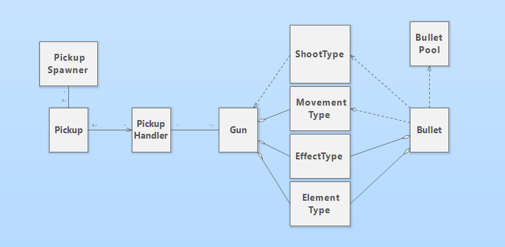

Modular Guns
A modular weapons system built through the aggregation of scriptable objects.
Overview
This is a modular weapons system I built for my programming class, with the intention of learning some more advanced system design. Every gun holds references to scriptable objects, which together define how it functions.

The system
Every gun holds 3 scriptable object references, which are the ShootType,
MoveType, and ElementType, all inheriting from
the EffectType base class. The shoot type determines the spread,
fire rate, and number of bullets that are shot. The move type determines how those bullets move through space,
and the element type determines whether the bullets have a neutral, ice, or fire element.
There are a number of pickups that spawn in the world, and each one holds its own reference to
a single EffectType. Upon pickup, the PickupHandler parses the derived type
and injects it into the corresponding field on the currently equipped weapon.
Custom editor scripts
While working on this project I learned about custom editor scripts, which are a way to control how your script is displayed on the Unity Editor. They are incredibly useful, and can for example be used to show or hide fields based on certain conditions, such as the value of a boolean or enum.
class GameObject { public: Tmpl8::vec2 pos; bool debug = false; void Start(); void Tick(); template <typename T, typename... Args> T& AddComponent(Args&&... args) { auto comp = std::make_unique<T>(std::forward<Args>(args)...); comp->gameObject = this; T& ref = *comp; components.push_back(std::move(comp)); return ref; } template <typename T> T* GetComponent() { for (const auto& component : components) { T* ptr = dynamic_cast<T*>(component.get()); if (ptr) return ptr; } return nullptr; } void SetActive(bool isActive); GameObject(Tmpl8::vec2 spawnPos, bool debug) : pos(spawnPos), debug(debug){}; private: std::vector<std::unique_ptr<Component>> components; bool active = true; // Whether to run Tick() logic void DrawOrigin(); };
The base GameObject class is barebones, containing only a vector2 position,
component-handling logic, and members for lifecycle and debugging.
At the core of this is the AddComponent() function,
which uses variadic templates to pass any number of Component constructor
arguments through a single Args... parameter.
Sprite factory system
The Tmpl8 library provides a Sprite class that takes a
file location and frame count in its constructor. However, I wanted to be
able to pass my SpriteRenderer component a sprite directly, without having
to worry about the sprite's properties. Initially, I passed the SpriteRenderer
a raw pointer to a pre-existing sprite object, but this meant that all gameObjects with the same sprite
also shared the actual sprite object, making it impossible to handle animations correctly.
To fix this, I utilized the factory pattern. I created a SpriteFactory class that
held an unordered_map that took a sprite name as its key (e.g: "tree")
and returned a struct that held the corresponding constructor arguments (e.g: "assets/tree.png", 6).
A static BuildSprite() function took a key as its parameter, and used the data
it returned to construct a new sprite using make_unique(). The SpriteRenderer
took this unique_ptr and transferred ownership of it to itself, ensuring every
SpriteFactory::SpriteInfo ufoInfo = { "assets/ufo.png", 3 }; SpriteFactory::SpriteInfo treeInfo = { "assets/tree.png", 1 }; unordered_map<string, SpriteFactory::SpriteInfo*> SpriteFactory::sprites = { { "ufo", &ufoInfo }, { "tree", &treeInfo }, }; unique_ptr<Sprite> SpriteFactory::BuildSprite(string spriteName) { auto info = sprites[spriteName]; return make_unique<Sprite>(new Surface(info->address.c_str()), info->frameCount); } }
Object pool system
To keep things performant, I opted to use an object pooling system for the two types of gameObjects
that would regularly be spawned in; cows and missiles. To achieve this, I again needed to use
a variadic template function. I had wrapped these gameObjects in a prefab class that handled
the necessary AddComponent() calls, but this meant that every prefab had a different
set of arguments to be passed in its constructor.
class ObjectPool { public: template <typename First, typename... Args> void InstantiateToPool(First prefab, Scene* scene, Args... args) { for (int i = 0; i < poolSize; i++) { auto go = prefab.Load(scene, std::forward<Args>(args)...); go->SetActive(false); pool.push(go); } } GameObject* SpawnFromPool(); void ReturnToPool(GameObject* go); // Structors ObjectPool(int poolSize) : poolSize(poolSize) {}; private: int poolSize; std::queue<GameObject*> pool; };
The rest of the system just followed generic pooling functionality.
GameObject* ObjectPool::SpawnFromPool() { if (pool.empty()) return nullptr; auto go = pool.front(); pool.pop(); go->SetActive(true); return go; } void ObjectPool::ReturnToPool(GameObject* go) { pool.push(go); go->SetActive(false); }